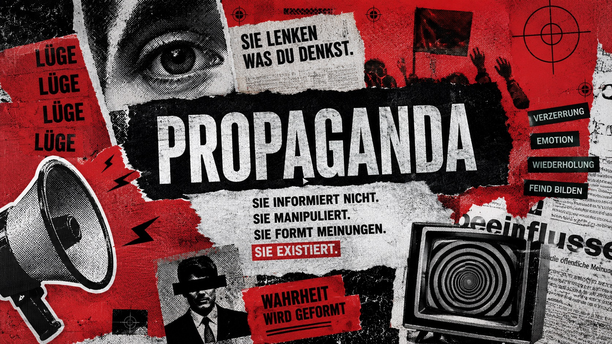
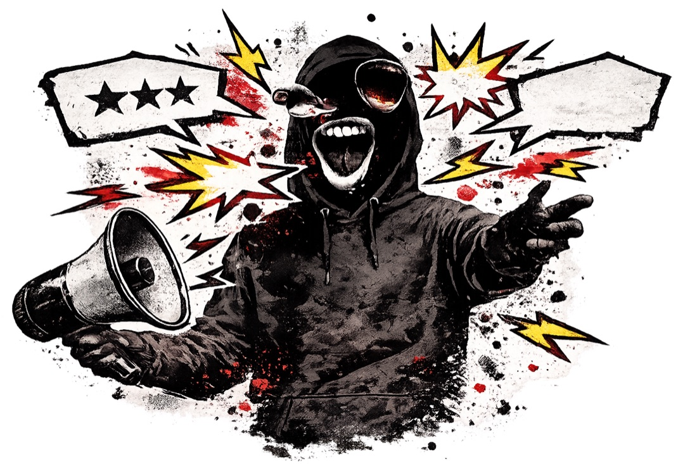

Er sagt Globalisten. Er schreibt 109. Er setzt drei Klammern um ein Wort. Diese Seite zeigt 108 solcher Codes. Quelle: BfV („Globalisten“, „109“, „(((…)))“) · REG — alle drei Codes stehen erläutert in Abschnitt 03
01Scan
Vier konstruierte Beiträge — kein reales Material. Tippe auf „Codes markieren“, dann auf einen roten Begriff.
02Test
Acht Aussagen, drei Antwortmöglichkeiten. Jede Auflösung nennt ihre Quelle.
03Codes
Wähle eine Erzählung. Darunter erscheinen ihre Codes — antippen für die Erklärung.
04Mechanik
Vier Hebel, mit denen Codes wirken — jeder einzeln belegt.

Zahlen zur Verbreitung
05Fragen
Einwände und was die Fachliteratur dazu sagt. Antippen zum Aufklappen.
06Was tun
Fünf Schritte, jeder mit Quelle. Wischen oder mit den Pfeilen blättern.

07Melden
Zwei Stellen, an die du antisemitische Vorfälle, Symbole oder Drohungen melden kannst.